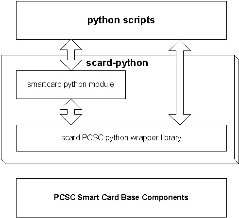

pyscard is a python module adding smart cards support to python.
It consists of smartcard.scard, an extension module wrapping Windows smart card base components (also known as PCSC), and smartcard, a python framework library hiding PCSC complexity.

| Display the ATR of inserted cards | view source |
| Selecting the DF_TELECOM of a card | view source |
| A simple apdu tracer and interpreter | view source |
| Tracing connection events | view source |
| Decorating Card Connections to add custom behavior | view source |
| Detecting response apdu errors | view source |
| Implementing a custom ErrorChecker | view source |
| Implementing a custom card type | view source |
| Monitoring smartcard readers | view source |
| Monitoring smartcard insertion/removal | view source |
| APDU/ATR byte to string utilities | view source |
This file is part of pyscard.
pyscard is free software; you can redistribute it and/or modify it under the terms of the GNU Lesser General Public License as published by the Free Software Foundation; either version 2.1 of the License, or (at your option) any later version.
pyscard is distributed in the hope that it will be useful, but WITHOUT ANY WARRANTY; without even the implied warranty of MERCHANTABILITY or FITNESS FOR A PARTICULAR PURPOSE. See the GNU Lesser General Public License for more details.
You should have received a copy of the GNU Lesser General Public License along with pyscard; if not, write to the Free Software Foundation, Inc., 51 Franklin St, Fifth Floor, Boston, MA 02110-1301 USA